Topic 2-03: Implement GSEA from scratch
Zuguang Gu z.gu@dkfz.de
2025-05-31
Source:vignettes/topic2_03_implement_gsea.Rmd
topic2_03_implement_gsea.RmdIn this document, we will implement the two versions of GSEA in R, using the p53 dataset also from the GSEA 2005 paper.
library(GSEAtopics)
data(p53_dataset)
expr = p53_dataset$expr # expression matrix
condition = p53_dataset$condition # experimental labels
gs = p53_dataset$gs # C2 gene sets
geneset = gs[["p53hypoxiaPathway"]]
geneset = intersect(geneset, rownames(expr))This gene set is very small:
length(geneset)## [1] 20Note, in all other vignettes, we use “MUT” as the treatment and “WT” as the control. But in this vignette, the p53hypoxiaPathway is a perfect example to show the ideas of GSEA, but it is down-regulated in MUT. Thus we change the direction of the comparison to let “WT” be the treatment then the p53hypoxiaPathway gene set has an up-regulation.
The heatmap of genes in this gene set:
library(genefilter)
tdf = rowttests(expr, condition)
tdf$p_adjust = p.adjust(tdf$p.value, "BH")
library(ComplexHeatmap)
Heatmap(t(scale(t(expr[geneset, ]))),
column_split = condition, cluster_column_slices = FALSE,
top_annotation = HeatmapAnnotation(condition = condition),
right_annotation = rowAnnotation(tvalue = anno_points(tdf[geneset, "statistic"],
gp = gpar(col = ifelse(tdf[geneset, "p.value"] < 0.01, "red", "black")),
width = unit(2, "cm"))))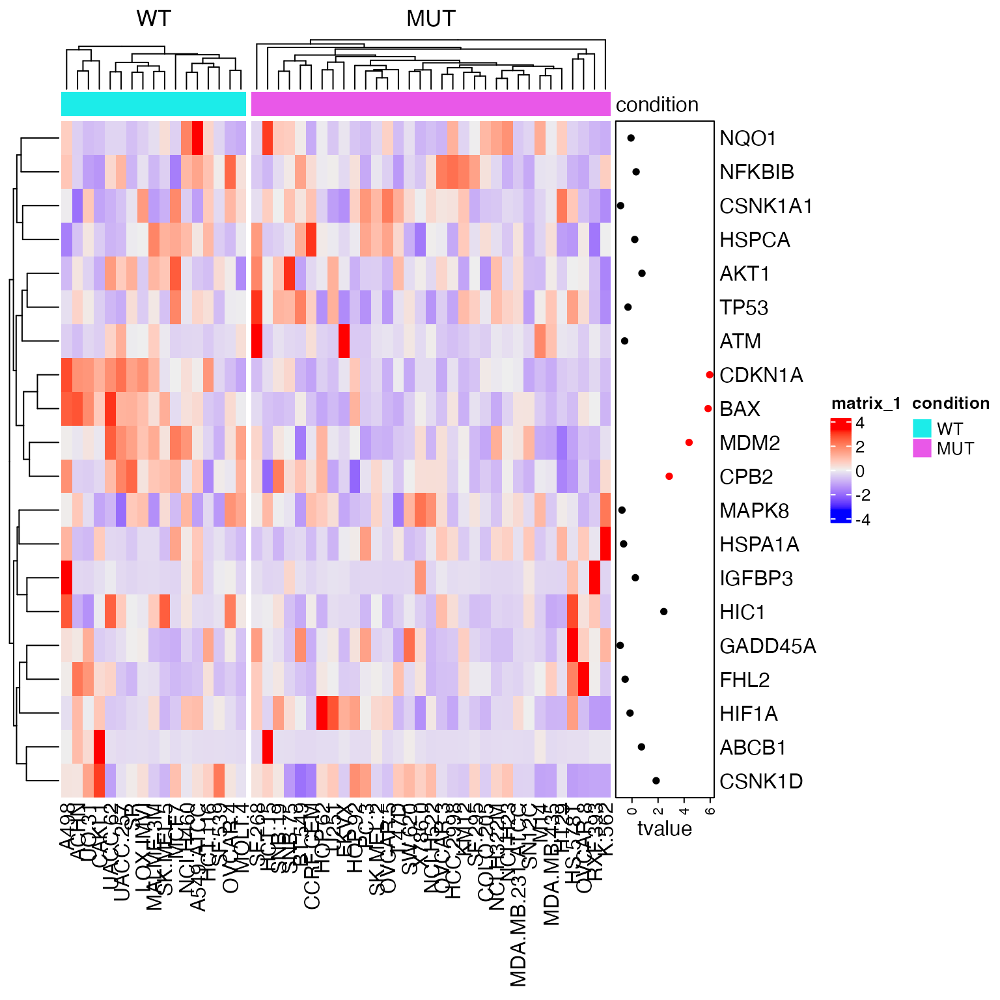
Note here gene IDs in the expression matrix and in the gene set are all gene symbols, thus no more adjustment needs to be done here.
The gene-level difference score is set as signal-to-noise ratios, which is:
We calculate the gene-level difference score in s:
s = apply(expr, 1, function(x) {
x1 = x[condition == "WT"]
x2 = x[condition == "MUT"]
(mean(x1) - mean(x2))/(sd(x1) + sd(x2))
})A faster way to calculate s is to use the
matrixStats packages.
library(matrixStats)
m1 = expr[, condition == "WT"] # only samples in group 1
m2 = expr[, condition == "MUT"] # only samples in group 2
s = (rowMeans(m1) - rowMeans(m2))/(rowSds(m1) + rowSds(m2)) # gene-level difference scoresSort the gene scores from the highest to the lowest:
s = sort(s, decreasing = TRUE)For simplicity, we mainly demonstrate the implementation for enrichment of up-regulation (right-sided).
GSEA version 1
Calculate enrichment score
Next we first implement the original GSEA method, which was proposed in Mootha et al. 2003.
We calculate the cummulative probability of a gene being in a gene set . At position in the sorted gene score vector:
## original GSEA
l_set = names(s) %in% geneset
f1 = cumsum(l_set)/sum(l_set)
## or
binary_set = l_set + 0
f1 = cumsum(binary_set)/sum(binary_set)Here in the calculation of f1, sum(l_set)
is
,
cumsum(l_set) is
.
Similarly, we calculate the cummulative distribution of a gene not in the gene set.
f1 and f2 can be used to plot the CDFs of
two distributions.
n = length(s)
plot(1:n, f1, type = "l", col = "red", xlab = "sorted genes")
lines(1:n, f2, col = "blue")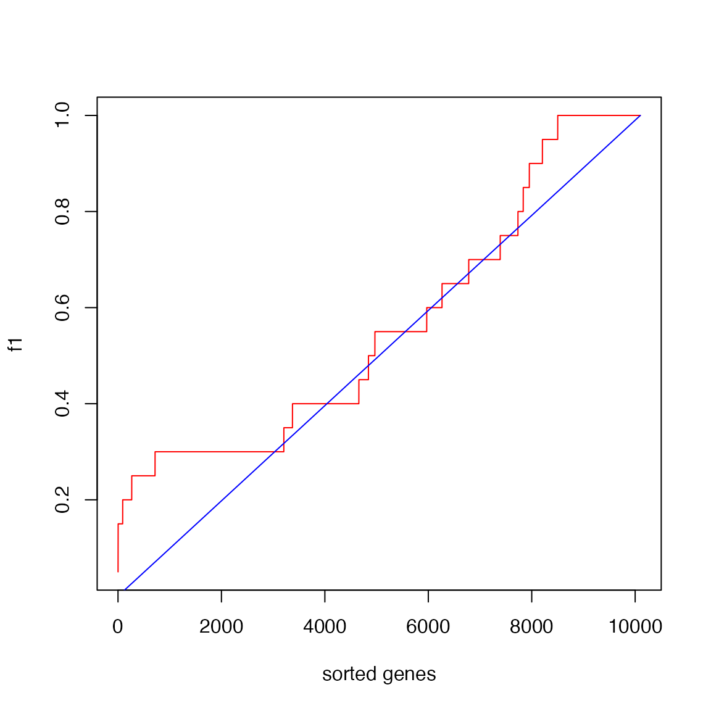
The reason why the blue locates almost on the diagonal is the gene set is very small.
Next the difference of cumulative probability (f1 - f2)
at each position on the sorted gene list. Let’s call it “the GSEA
plot”.
plot(f1 - f2, type = "l", xlab = "sorted genes")
abline(h = 0, lty = 2, col = "grey")
points(which(l_set), rep(0, sum(l_set)), pch = "|", col = "red")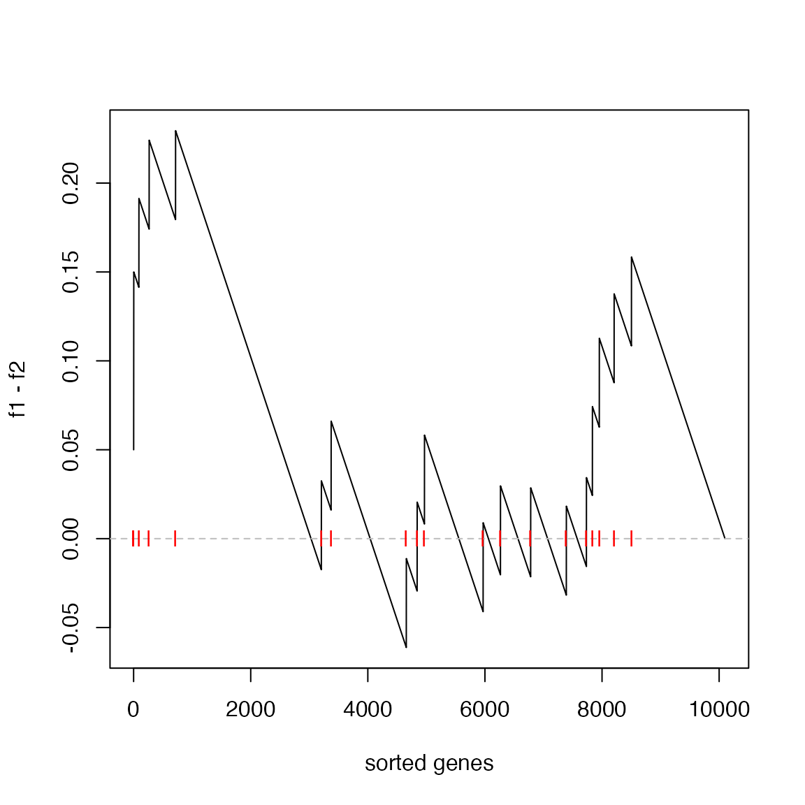
The enrichment score (ES) defined as max(f1 - f2)
is:
es = max(f1 - f2)
es## [1] 0.2294643And the position in the “GSEA plot”:
plot(f1 - f2, type = "l", xlab = "sorted genes")
abline(h = 0, lty = 2, col = "grey")
points(which(l_set), rep(0, sum(l_set)), pch = "|", col = "red")
abline(v = which.max(f1 - f2), lty = 3, col = "blue")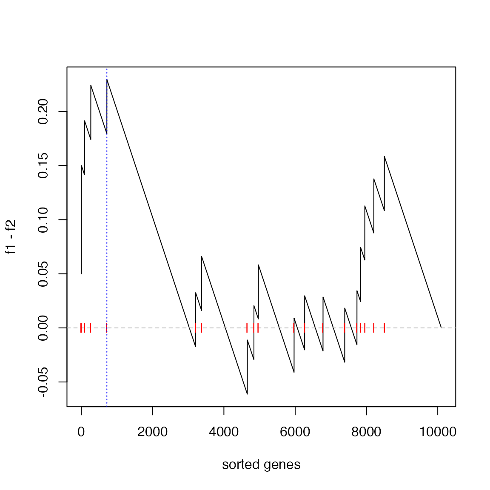
The statistic es actually is the Kolmogorov-Smirnov
statistics, thus, we can directly apply the KS test where the two
vectors for the KS test are the positions on the sorted gene list.
##
## Asymptotic two-sample Kolmogorov-Smirnov test
##
## data: which(l_set) and which(l_other)
## D = 0.22946, p-value = 0.244
## alternative hypothesis: two-sidedHowever, we can see the p-value is not significant for this gene set. This is because KS test is not a powerful test. Next we construct the null distribution by sample permutation.
Sample permutation
In the next code chunk, the calculation of ES score is wrapped into a
function, also we use rowMeans() and rowSds()
to speed up the calculation of gene-level scores.
library(matrixStats)
# expr: the complete expression matrix
# condition: the condition labels of samples, level[1] > level[2] means up-regulation
# geneset: A vector of genes
condition = factor(condition, level = c("WT", "MUT"))
calculate_es = function(expr, condition, geneset) {
cmp = levels(condition)
m1 = expr[, condition == cmp[1]] # only samples in group 1
m2 = expr[, condition == cmp[2]] # only samples in group 2
s = (rowMeans(m1) - rowMeans(m2))/(rowSds(m1) + rowSds(m2)) # a gene-level difference socre (S2N ratio)
s = sort(s, decreasing = TRUE) # ranked gene list
l_set = names(s) %in% geneset
f1 = cumsum(l_set)/sum(l_set) # CDF for genes in the set
l_other = !l_set
f2 = cumsum(l_other)/sum(l_other) # CDF for genes not in the set
max(f1 - f2)
}The ES score calculated by calculate_es():
es = calculate_es(expr, condition, geneset)
es## [1] 0.2294643We randomly permute sample labels or we randomly permute
condition. These two ways are identical. The aim is to
break the association between condition and
expr.
We do sample permutation 1000 times. The random ES scores are saved
in es_rand.
set.seed(123)
es_rand = numeric(1000)
for(i in 1:1000) {
es_rand[i] = calculate_es(expr, sample(condition), geneset)
}p-value is calculated as the proportion of values in
es_rand being equal to or larger than es.
sum(es_rand >= es)/1000## [1] 0.129The null distribution of ES:
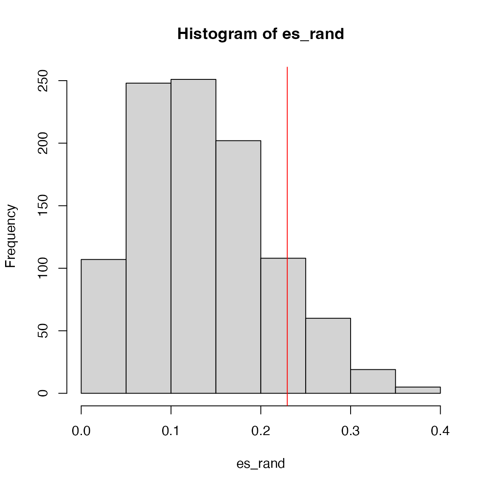
GSEA version 2
Next we implement the improved GSEA (Subramanian et al., PNAS, 2005) where gene-level scores are taken as the weights. The CDF of genes in the gene set is adjusted to:
where
is the power of the weight and is the total number of genes in the experiment.
We directly modify calculate_es() to
calculate_es_v2() where there is only two lines new, which
we highlight in the code chunk:
calculate_es_v2 = function(expr, condition, geneset, plot = FALSE, power = 1) {
cmp = levels(condition)
m1 = expr[, condition == cmp[1]]
m2 = expr[, condition == cmp[2]]
s = (rowMeans(m1) - rowMeans(m2))/(rowSds(m1) + rowSds(m2))
s = sort(s, decreasing = TRUE)
l_set = names(s) %in% geneset
# f1 = cumsum(l_set)/sum(l_set) # <<-- the original line
s_set = abs(s)^power # <<-- here
s_set[!l_set] = 0
f1 = cumsum(s_set)/sum(s_set) ## <<- here
l_other = !l_set
f2 = cumsum(l_other)/sum(l_other)
if(plot) {
plot(f1 - f2, type = "l", xlab = "sorted genes")
abline(h = 0, lty = 2, col = "grey")
points(which(l_set), rep(0, sum(l_set)), pch = "|", col = "red")
abline(v = which.max(f1 - f2), lty = 3, col = "blue")
}
max(f1 - f2)
}Now we calculate the new ES score and make the GSEA plot:
es = calculate_es_v2(expr, condition, geneset, plot = TRUE)
We can also check when power = 0 and
power = 2:
par(mfrow = c(1, 2))
calculate_es_v2(expr, condition, geneset, plot = TRUE, power = 0) # same as the original GSEA## [1] 0.2294643
title("power = 0")
calculate_es_v2(expr, condition, geneset, plot = TRUE, power = 2)## [1] 0.8925371
title("power = 2")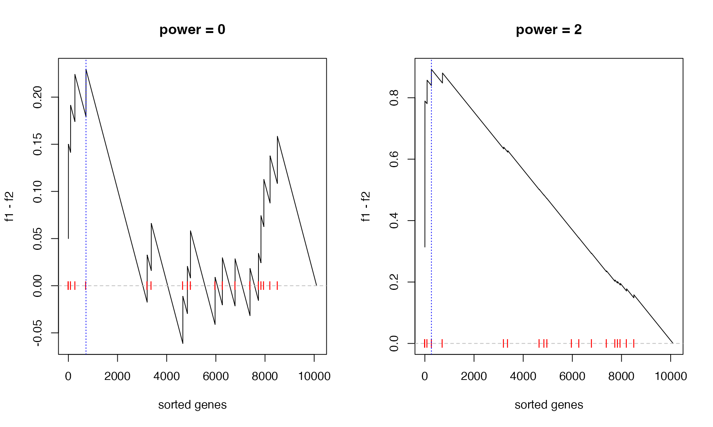
Similarly, we randomly permute samples to obtain the null distribution of ES:
es_rand = numeric(1000)
for(i in 1:1000) {
es_rand[i] = calculate_es_v2(expr, sample(condition), geneset)
}The new p-value:
sum(es_rand >= es)/1000## [1] 0The minimal p-value from 1000 permutations is 1/1000, so zeor here means p-value < 0.001.
And the null distribution of ES:
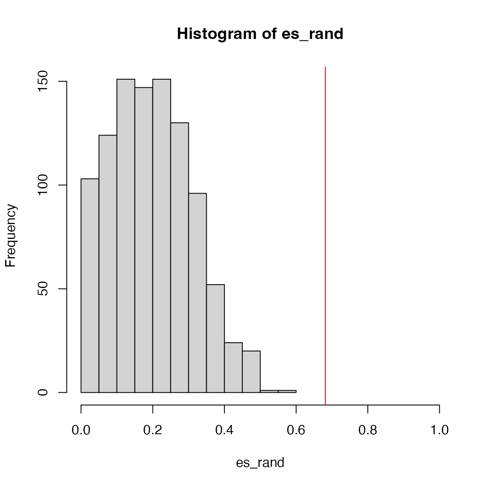
We can see the improved GSEA is more powerful than the original GSEA, because the original GSEA equally weights genes and the improved GSEA weights genes based on their differential expression, which increases the effect of diff genes. Let’s plot the weight of genes:
GSEA version 2, gene permutation
Null distribution can also be constructed by gene permutation. It is very easy to implement:
# s: a vector of pre-calcualted gene-level scores
# s should be sorted
calculate_es_v2_gene_perm = function(s, geneset, perm = FALSE, plot = FALSE, power = 1) {
if(perm) {
# s is still sorted, but the gene labels are randomly shuffled
# to break the associations between gene scores and gene labels.
# also s is still sorted
names(s) = sample(names(s)) ## <<- here
}
l_set = names(s) %in% geneset
s_set = abs(s)^power
s_set[!l_set] = 0
f1 = cumsum(s_set)/sum(s_set)
l_other = !l_set
f2 = cumsum(l_other)/sum(l_other)
if(plot) {
plot(f1 - f2, type = "l", xlab = "sorted genes")
abline(h = 0, lty = 2, col = "grey")
points(which(l_set), rep(0, sum(l_set)), pch = "|", col = "red")
abline(v = which.max(f1 - f2), lty = 3, col = "blue")
}
max(f1 - f2)
}Good thing of gene permutation is the gene-level scores only need to be calculated once and can be repeatedly used.
# pre-calculate gene-level scores
m1 = expr[, condition == "WT"]
m2 = expr[, condition == "MUT"]
s = (rowMeans(m1) - rowMeans(m2))/(rowSds(m1) + rowSds(m2))
s = sort(s, decreasing = TRUE) # must be pre-sortedThe GSEA plot under gene permutation:
es = calculate_es_v2_gene_perm(s, geneset, plot = TRUE)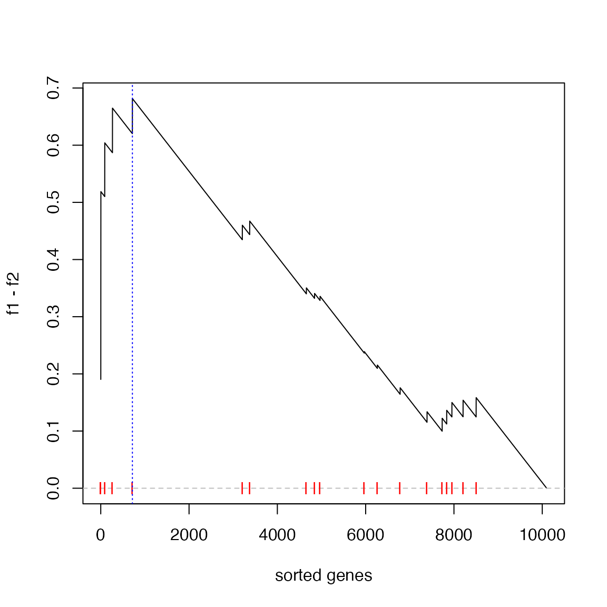
We calculate the null distribution of ES from gene permutation:
es_rand = numeric(1000)
for(i in 1:1000) {
es_rand[i] = calculate_es_v2_gene_perm(s, geneset, perm = TRUE)
}
sum(es_rand >= es)/1000## [1] 0The real p-value is also < 0.001.
The null distribution of ES from gene permutation:
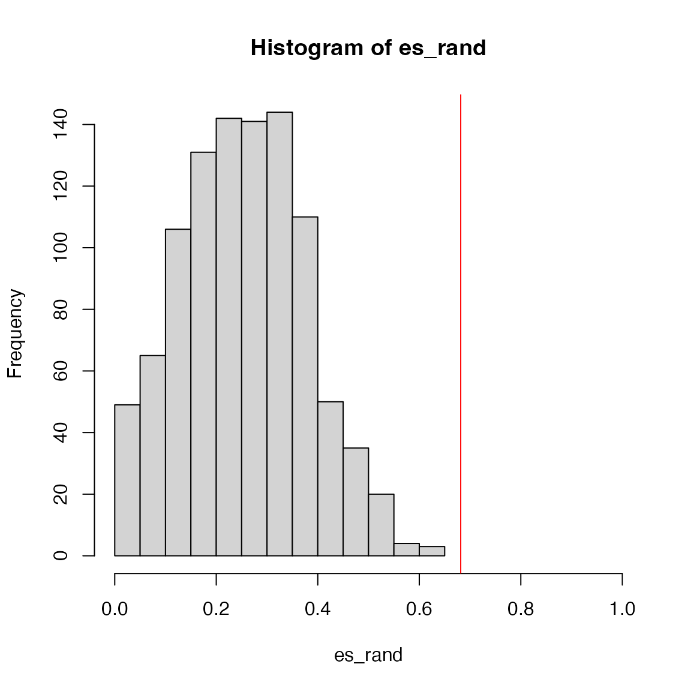
Other statistics
Taking es and es_rand calculated
previously, NES is calculated as
es/mean(es_rand)## [1] 2.692013NES does not take into account of the dispersion of
es_rand, sometimes z-scores is used instead:
## [1] 3.483993Two-sided test
The ES score we have introduced is one-sided (right-sided), i.e. we
only look at the enrichment for up-regulated genes. Basically, if there
exist negative values in f2 - f1, it means there is also an
enrichment for down-regulated genes. There are two ways to obtain a
statistics for two-sided test:
where , and there should exist both positive and negative values in .
If there are only positive values in , then the statistic is , and if there are only negative values in , the statistic is .
Standard GSEA uses the first method, i.e. maximal deviation of and .
calculate_es_v2_gene_perm_two_sided = function(s, geneset, perm = FALSE,
plot = FALSE, power = 1, method = "std") {
if(perm) {
# s is still sorted, but the gene labels are randomly shuffled
# to break the associations between gene scores and gene labels.
names(s) = sample(names(s)) ## <<- here
}
l_set = names(s) %in% geneset
s_set = abs(s)^power
s_set[!l_set] = 0
f1 = cumsum(s_set)/sum(s_set)
l_other = !l_set
f2 = cumsum(l_other)/sum(l_other)
m1 = max(f1 - f2)
m2 = min(f1 - f2)
if(method == "std") {
max(m1, -m2)*ifelse(m1 > -m2, sign(m1), sign(m2))
} else if(method == "diff") {
if(m1 >= 0 && m2 >= 0) {
m1
} else if(m1 <= 0 && m2 <= 0) {
m2
} else {
m1 + m2
}
}
}Random distribution is generated in the same way.
es = calculate_es_v2_gene_perm_two_sided(s, geneset)
es_rand = numeric(1000)
for(i in 1:1000) {
es_rand[i] = calculate_es_v2_gene_perm_two_sided(s, geneset, perm = TRUE)
}The calculation of the p-value is a little bit different. For the standard GSEA two-sided method, as ES is actually from two different ES scores, the null distribution is bimodal. If ES is positive, then the p-value as well as NES are only calculated from the right distribution, and if ES is negative, the p-value as well as NES are only calculated from the left distribution (left-sided).
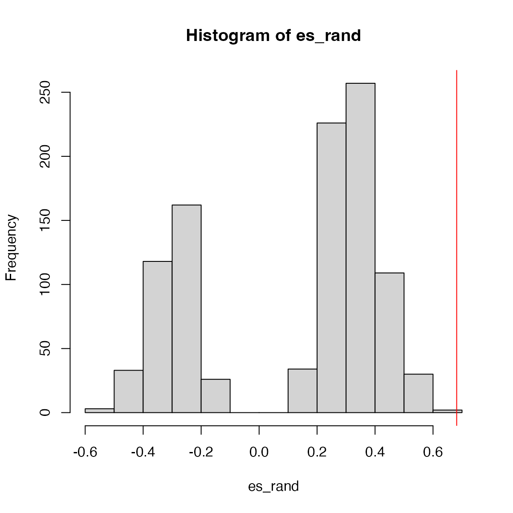
## [1] 0.001519757
es/mean(es_rand[es_rand > es]) # NES## [1] 0.9784004For the second method, the null distribution is bell-like.
es = calculate_es_v2_gene_perm_two_sided(s, geneset, method = "diff")
es_rand = numeric(1000)
for(i in 1:1000) {
es_rand[i] = calculate_es_v2_gene_perm_two_sided(s, geneset, perm = TRUE, method = "diff")
}
hist(es_rand)
abline(v = es, col = "red")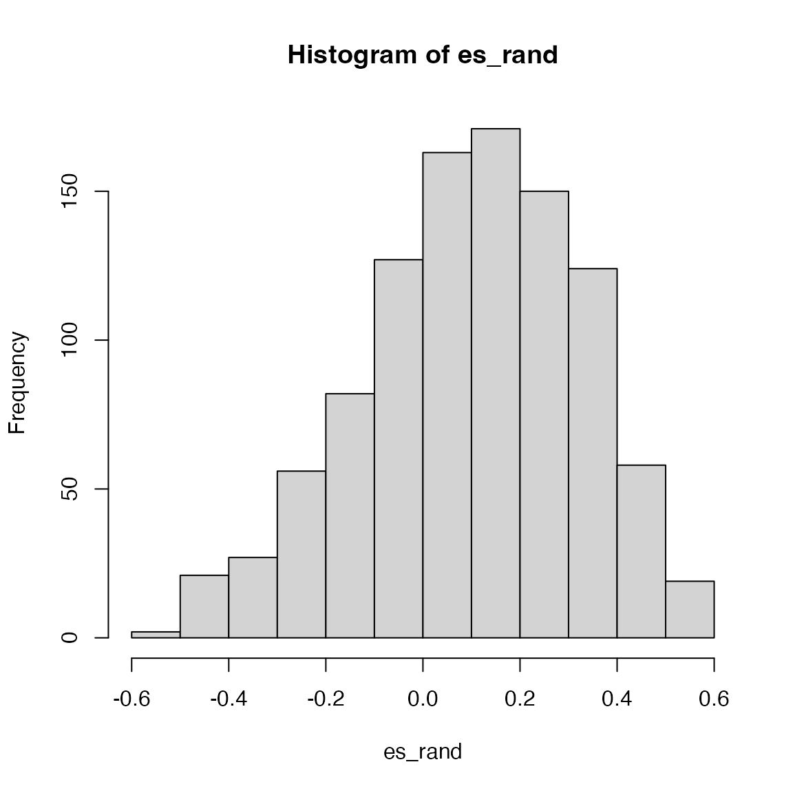
p-value can be calculated as right-sided or left-sided according to
the sign of ES, or calculated as
sum(abs(es_rand) > abs(es))/perm. For this method, to
scale all ES, NES can be defined as a z-score
(es-mean(es_rand))/sd(es_rand).
Practice
Practice 1
We have demonstrated two different ways (sample permutation and gene permutation) for calculating p-values. Apply the p53 dataset on the 50 hallmark gene sets, and compare the two enrichment results (e.g. to check which method tends to generate more signficant p-values).
The code we saw so far only applies to a single gene set, you may
need to put it into a for loop to go over each of the 50
hallmark gene sets.
The Hallmark gene sets from MSigDB
library(GSEAtopics)
gs_hallmark = get_msigdb(version = "2023.2.Hs", collection = "h.all", gene_id_type = "symbol")
n_gs = length(gs_hallmark)Sample permutation:
p1 = numeric(n_gs)
es1 = numeric(n_gs)
nes1 = numeric(n_gs)
z1 = numeric(n_gs)
for(i in 1:n_gs) {
print(i)
geneset = gs_hallmark[[i]]
es1[i] = calculate_es_v2(expr, condition, geneset)
es_rand = numeric(1000)
for(k in 1:1000) {
es_rand[k] = calculate_es_v2(expr, sample(condition), geneset = geneset)
}
p1[i] = sum(es_rand >= es1[i])/1000
nes1[i] = es1[i]/mean(es_rand)
z1[i] = (es1[i] - mean(es_rand))/sd(es_rand)
}## [1] 1
## [1] 2
## [1] 3
## [1] 4
## [1] 5
## [1] 6
## [1] 7
## [1] 8
## [1] 9
## [1] 10
## [1] 11
## [1] 12
## [1] 13
## [1] 14
## [1] 15
## [1] 16
## [1] 17
## [1] 18
## [1] 19
## [1] 20
## [1] 21
## [1] 22
## [1] 23
## [1] 24
## [1] 25
## [1] 26
## [1] 27
## [1] 28
## [1] 29
## [1] 30
## [1] 31
## [1] 32
## [1] 33
## [1] 34
## [1] 35
## [1] 36
## [1] 37
## [1] 38
## [1] 39
## [1] 40
## [1] 41
## [1] 42
## [1] 43
## [1] 44
## [1] 45
## [1] 46
## [1] 47
## [1] 48
## [1] 49
## [1] 50
df1 = data.frame(
geneset = names(gs_hallmark),
es = es1,
nes = nes1,
z = z1,
p_value = p1
)Gene permutation:
m1 = expr[, condition == "WT"]
m2 = expr[, condition == "MUT"]
s = (rowMeans(m1) - rowMeans(m2))/(rowSds(m1) + rowSds(m2))
s = sort(s, decreasing = TRUE) # must be pre-sorted
p2 = numeric(n_gs)
es2 = numeric(n_gs)
nes2 = numeric(n_gs)
z2 = numeric(n_gs)
for(i in 1:n_gs) {
print(i)
geneset = gs_hallmark[[i]]
es2[i] = calculate_es_v2_gene_perm(s, geneset = geneset)
es_rand = numeric(1000)
for(k in 1:1000) {
es_rand[k] = calculate_es_v2_gene_perm(s, geneset = geneset, perm = TRUE)
}
p2[i] = sum(es_rand >= es2[i])/1000
nes2[i] = es2[i]/mean(es_rand)
z2[i] = (es2[i] - mean(es_rand))/sd(es_rand)
}## [1] 1
## [1] 2
## [1] 3
## [1] 4
## [1] 5
## [1] 6
## [1] 7
## [1] 8
## [1] 9
## [1] 10
## [1] 11
## [1] 12
## [1] 13
## [1] 14
## [1] 15
## [1] 16
## [1] 17
## [1] 18
## [1] 19
## [1] 20
## [1] 21
## [1] 22
## [1] 23
## [1] 24
## [1] 25
## [1] 26
## [1] 27
## [1] 28
## [1] 29
## [1] 30
## [1] 31
## [1] 32
## [1] 33
## [1] 34
## [1] 35
## [1] 36
## [1] 37
## [1] 38
## [1] 39
## [1] 40
## [1] 41
## [1] 42
## [1] 43
## [1] 44
## [1] 45
## [1] 46
## [1] 47
## [1] 48
## [1] 49
## [1] 50
df2 = data.frame(
geneset = names(gs_hallmark),
es = es2,
nes = nes2,
z = z2,
p_value = p2
)Compare ES, NES, z-scores, and p-values:
par(mfrow = c(2, 2))
plot(df1$es, df2$es, main = "ES",
xlab = "sample permutation", ylab = "gene permutation")
plot(df1$nes, df2$nes, main = "NES", xlim = c(0, 2.5), ylim = c(0, 2.5),
xlab = "sample permutation", ylab = "gene permutation")
plot(df1$z, df2$z, main = "Z-score",
xlab = "sample permutation", ylab = "gene permutation")
plot(df1$p_value, df2$p_value, main = "P-value",
xlab = "sample permutation", ylab = "gene permutation")Practice 2
In GSEA v1, the enrichment score is basically a KS-statistics. Can
you compare p-values directly from KS-test and from sample-permutation?
For this comparison, use the calculate_es() for GSEA v1.
Note we demonstrated the enrichment on up-regulated genes, then in
ks.test(), set alternative = "great".
condition = factor(condition, levels = c("WT", "MUT"))
m1 = expr[, condition == "WT"]
m2 = expr[, condition == "MUT"]
s = (rowMeans(m1) - rowMeans(m2))/(rowSds(m1) + rowSds(m2))
s = sort(s, decreasing = TRUE) # must be pre-sorted
p_ks = numeric(n_gs)
p_perm = numeric(n_gs)
for(i in 1:n_gs) {
print(i)
geneset = gs_hallmark[[i]]
es = calculate_es(expr, condition, geneset)
es_rand = numeric(1000)
for(k in 1:1000) {
es_rand[k] = calculate_es(expr, sample(condition), geneset)
}
p_perm[i] = sum(es_rand >= es)/1000
l_set = names(s) %in% geneset
l_other = !l_set
p_ks[i] = ks.test(which(l_set), which(l_other), alternative = "greater")$p.value
}## [1] 1
## [1] 2
## [1] 3
## [1] 4
## [1] 5
## [1] 6
## [1] 7
## [1] 8
## [1] 9
## [1] 10
## [1] 11
## [1] 12
## [1] 13
## [1] 14
## [1] 15
## [1] 16
## [1] 17
## [1] 18
## [1] 19
## [1] 20
## [1] 21
## [1] 22
## [1] 23
## [1] 24
## [1] 25
## [1] 26
## [1] 27
## [1] 28
## [1] 29
## [1] 30
## [1] 31
## [1] 32
## [1] 33
## [1] 34
## [1] 35
## [1] 36
## [1] 37
## [1] 38
## [1] 39
## [1] 40
## [1] 41
## [1] 42
## [1] 43
## [1] 44
## [1] 45
## [1] 46
## [1] 47
## [1] 48
## [1] 49
## [1] 50
plot(p_perm, p_ks)